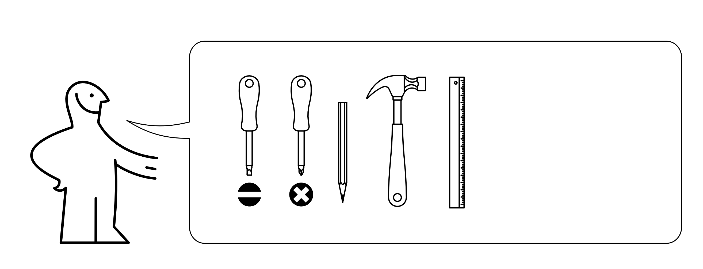
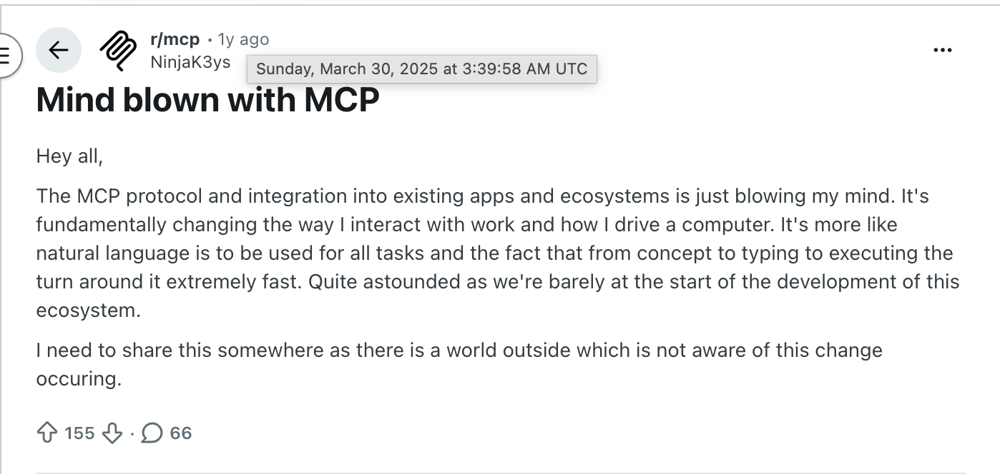
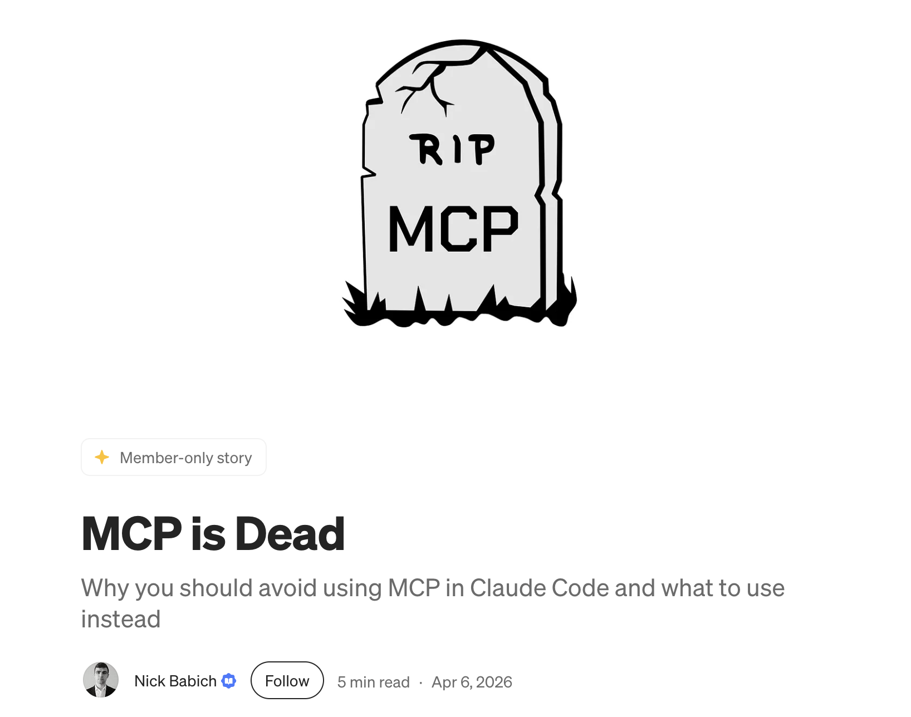
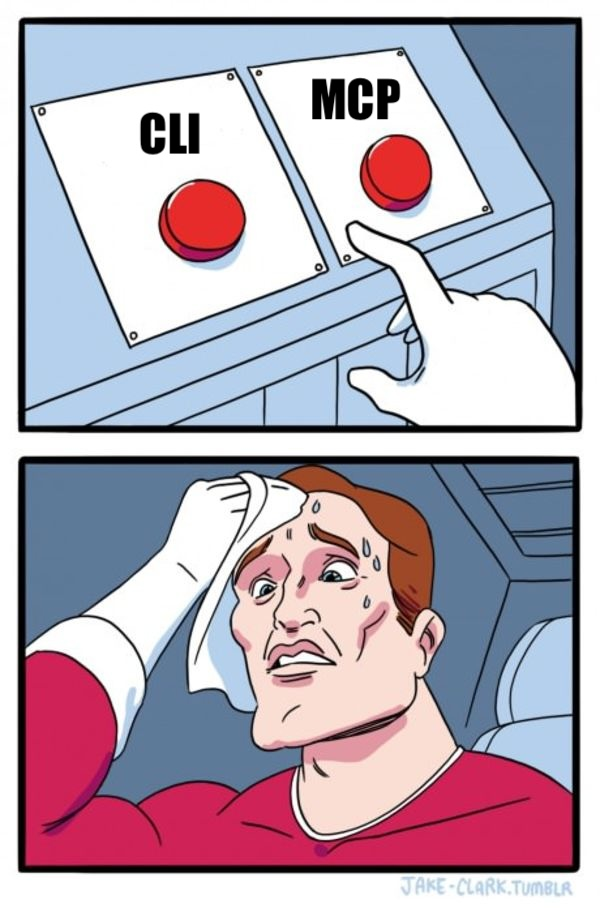

PyData London
June 6, 2026
▐▛███▜▌ Claude Code v2.1.158
▝▜█████▛▘ Opus 4.8 (1M context) · Claude Enterprise
▘▘ ▝▝ ~/code
Opus 4.8 is here! Now defaults to high effort · /effort xhigh for your hardest tasks
❯ please help me with https://posit.zendesk.com/agent/tickets/129426
▐▛███▜▌ Claude Code v2.1.158
▝▜█████▛▘ Opus 4.8 (1M context) · Claude Enterprise
▘▘ ▝▝ ~/code
Opus 4.8 is here! Now defaults to high effort · /effort xhigh for your hardest tasks
❯ please help me with https://posit.zendesk.com/agent/tickets/129426
⏺ I'll help with that Zendesk ticket. Let me fetch its contents.
⏺ Fetch(https://posit.zendesk.com/agent/tickets/129426)
⎿ Received 259 bytes (200 OK)
⏺ The ticket is behind Zendesk's authentication, so I can't fetch it directly — WebFetch only works on public URLs, and
I don't have a Zendesk integration available in this session.
Could you paste the ticket contents here?

claude mcp add name-here -- uvx --from "git+https://github.com/user/repo"claude mcp add name-here -- uvx --from "git+https://github.com/user/repo"claude mcp add --transport http name-here https://example.com/mcp
https://www.reddit.com/r/mcp/comments/1jn3ykp/mind_blown_with_mcp/

https://uxplanet.org/mcp-is-dead-cf16b667ba6d
If the agent can do everything with tools it already has (Bash, Fetch, etc.) then a Skill is probably enough
Otherwise, Skill is complement: we’re talking (MCP + Skill) vs. (CLI + Skill)

Critique that MCP takes up too much context: all tool definitions are loaded up front and take up tokens
Claude Code is good with CLIs: why use GitHub’s MCP if gh is already right there?
Use CLI when:
CLI already exists, is widely available and in the training data
Your agent has Bash available to call the CLI
Access to private data
Exposure to untrusted content
Ability to exfiltrate
https://simonwillison.net/2025/Jun/16/the-lethal-trifecta/
Only define the tools you need
Make responses concise
Sanitize sensitive data
▐▛███▜▌ Claude Code v2.1.158
▝▜█████▛▘ Opus 4.8 (1M context) · Claude Enterprise
▘▘ ▝▝ ~/code
Opus 4.8 is here! Now defaults to high effort · /effort xhigh for your hardest tasks
❯ please use the fastmcp library to help me start an MCP server for ...
Official MCP SDK
fastmcp library
@mcp.tool()
async def list_ticket_comments(ticket_id: int) -> str:
"""List all comments on a ticket.
Args:
ticket_id: Ticket ID to get comments from
"""
result = await client.list_ticket_comments(ticket_id)
for comment in result.get("comments", []):
comment.pop("html_body", None) # keep plain text only
comment.pop("body", None)
comment.pop("metadata", None) # client info, IP, location
comment["attachments"] = [
{"file_name": a["file_name"], "content_url": a["content_url"]}
for a in comment.get("attachments", [])
]
return json.dumps(result, indent=2)n***@posit.co
It’s just an HTTP API–host it anywhere you host APIs
Self-host in Docker, inside your own network
MCP-aware platforms
Or whatever cloud platform your company already has
Authentication: OAuth 2.1 flow, or an HTTP header–clients like Claude Code know the handshake
Access control: who can use the MCP server
Monitoring: logs, traces, etc.: especially important with AI
Other enterprise-y things: integrations, etc.
claude mcp add --transport http zendesk https://example.com/zendesk/mcpMCP is (just) an API standard for AI agents
Writing and deploying your own remote MCP servers can unlock superpowers for your agentic workflows
AI brings inherent security risks, but a well designed MCP server can mitigate them
Limiting the tools you expose and the data in responses improves efficiency and security
You (or your agent) can easily write custom MCP servers
CLIs are great: if you’re in a coding agent that has bash and there is a widely available CLI for your task (like gh)
Skills are great: if you can express what you want the agent to do in plain text (markdown), building on other tools it already has
Local MCP that you own: if you don’t have somewhere secure to deploy a remote MCP server